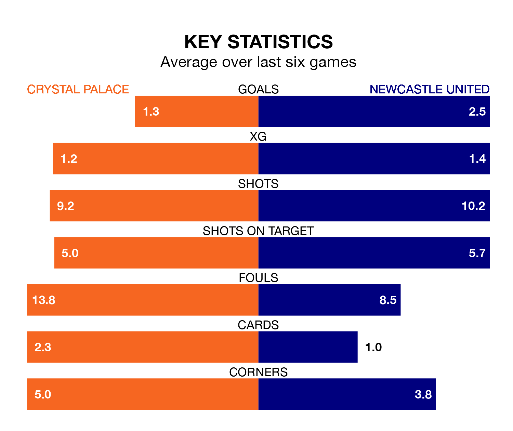

Newcastle United travel to Crystal Palace on late Friday in the Premier League.
The visitors come into the game on the back of a defeat in their last match, having lost to Chelsea 3-2 away, with goals from Alexander Isak and Jacob Murphy.
The Eagles, meanwhile, drew their last match, 1-1 against Luton Town, with their goal scored by Jean-Philippe Mateta.
With 59 goals in 28 games so far this season, Newcastle are scoring more than average in the league with 2.1 goals per game. But they are conceding more than average too, letting in 48 goals at a rate of 1.7 per game.
Palace, meanwhile, are below average scorers, with 1.2 goals per game, compared to a league average of 1.6. They have conceded 1.7 goals per game.
In the last 10 years, Palace and Newcastle have played each other on 20 occasions. Palace won four of them, Newcastle eight, and they drew eight times.
On average, the Eagles scored 0.8 goals and the Magpies 1.1 in those matches.
Their last meeting was on October 21, when Newcastle won 4-0 at home.
United's Kieran Trippier is the league's most creative player, racking up 10 assists in 25 appearances so far this season.
For the Eagles, Jordan Ayew has set up the most goals, having laid on six assists in 26 games.
The home team are in disappointing form in the Premier League, with one win and two draws from their last six games.
With two wins and two draws over that period, the Magpies' form is better – they have taken eight points from 18, compared to Palace's five.
Palace are 15th in the table after 28 games, of which they have won seven and drawn eight, earning 29 points.
The visitors are five places ahead of the Eagles in 10th, with 12 wins and four draws putting them on 40 points.
Updated: 15:10 (UTC), 15/03/24